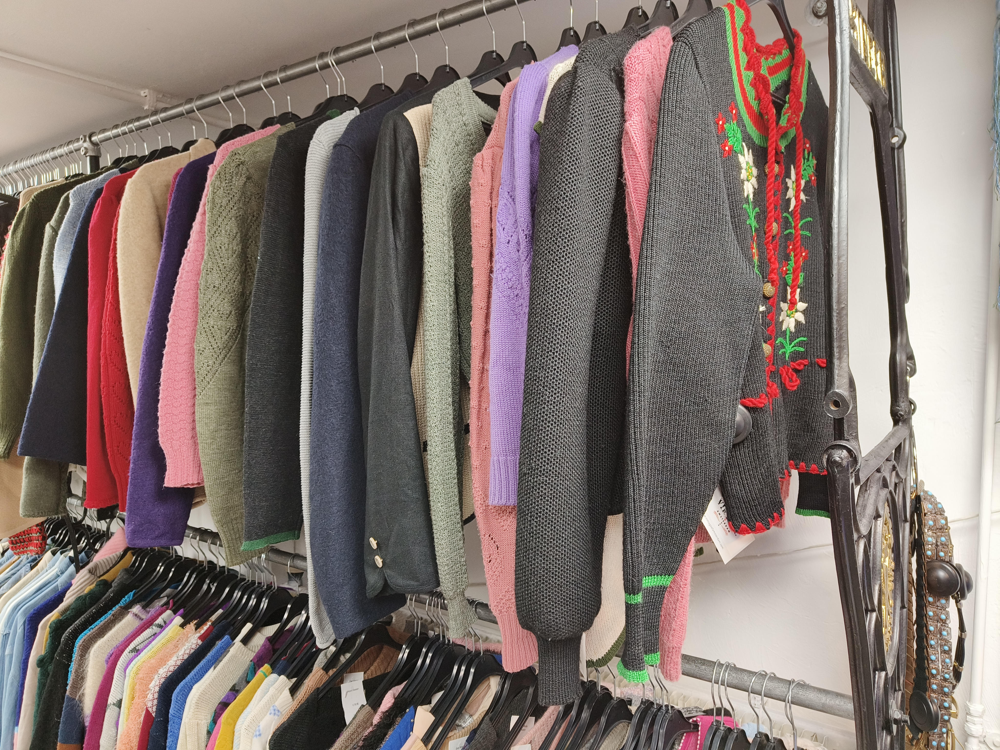
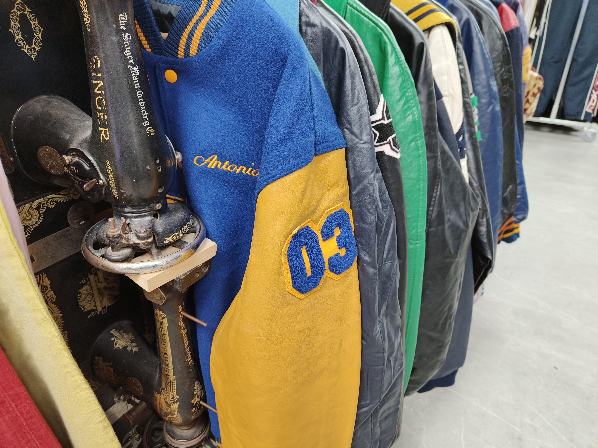
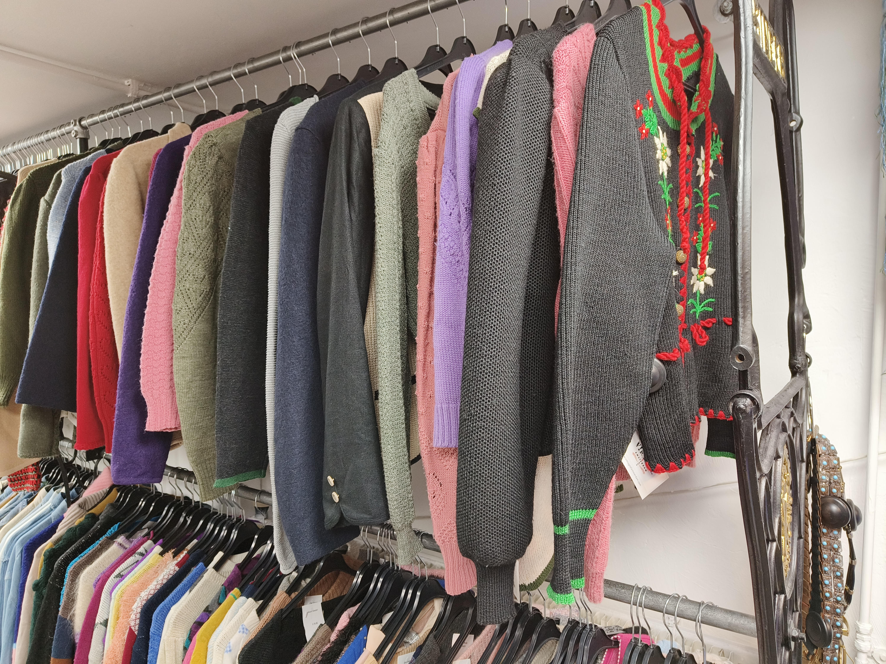

Reasons for Change
Een goede reden om kleding van een vintage store te kopen is omdat je daarmee ook meehelpt om het milieu schoon te houden. Dit zorgt voor minder plasticvervuiling en minder CO2 uitstoot.
Het process begint met het inzamelen van vintage kledingstukken. Deze vintage kledingstukken kunnen worden verzamelt bij markten of bij tweedehandse winkels. Ook kan het zo zijn dat mensen hun oude kledingstukken doneren naar een bedrijf zoals ENSŌ Vintage
Een bekende manier om vintage kleding the veranderen naar een top kwaliteit kledingstuk, is door te upcyclen. Je maakt dan een update aan de oude kledingstukken door het bijvoorbeeld een ander patroon te geven of het te verven.
Een goede reden om kleding van een vintage store te kopen is omdat je daarmee ook meehelpt om het milieu schoon te houden. Dit zorgt voor minder plasticvervuiling en minder CO2 uitstoot.
